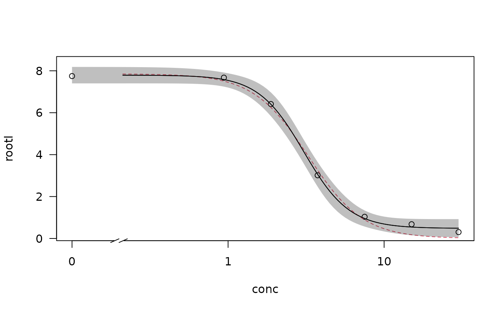
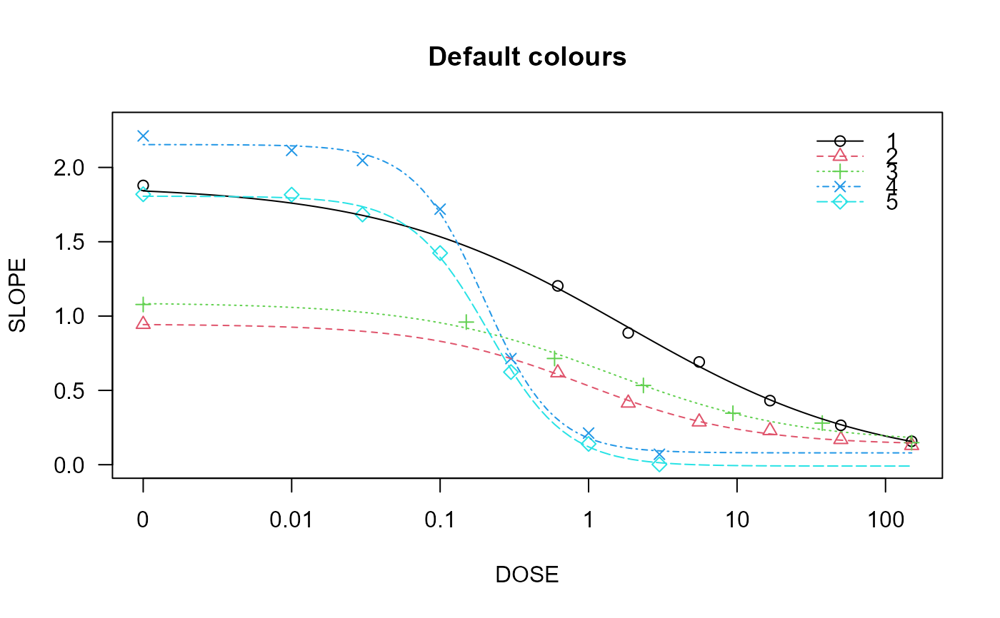

plot displays fitted curves and observations in the same plot window,
distinguishing between curves by different plot symbols and line types.
Usage
# S3 method for class 'drc'
plot(
x,
...,
add = FALSE,
level = NULL,
type = c("average", "all", "bars", "none", "obs", "confidence"),
broken = FALSE,
bp,
bcontrol = NULL,
conName = NULL,
axes = TRUE,
gridsize = 100,
log = "x",
xtsty,
xttrim = TRUE,
xt = NULL,
xtlab = NULL,
xlab,
xlim,
yt = NULL,
ytlab = NULL,
ylab,
ylim,
cex,
cex.axis = 1,
col = FALSE,
errbar.col = NULL,
lty,
pch,
legend,
legendText,
legendPos,
cex.legend = 1,
normal = FALSE,
normRef = 1,
confidence.level = 0.95
)Arguments
- x
an object of class 'drc'.
- ...
additional graphical arguments. For instance, use
lwd=2orlwd=3to increase the width of plot symbols.- add
logical. If TRUE then add to already existing plot.
- level
vector of character strings. To plot only the curves specified by their names.
- type
a character string specifying how to plot the data. Options are:
"average"(averages and fitted curve(s); default),"none"(only the fitted curve(s)),"obs"(only the data points),"all"(all data points and fitted curve(s)),"bars"(averages and fitted curve(s) with model-based standard errors), and"confidence"(confidence bands for fitted curve(s)).- broken
logical. If TRUE the x axis is broken provided this axis is logarithmic (using functionality in the CRAN package 'plotrix').
- bp
numeric value specifying the break point below which the dose is zero. The default is the base-10 value corresponding to the rounded value of the minimum of the log10 values of all positive dose values. Only works for logarithmic dose axes.
- bcontrol
a list with components
factor,styleandwidthcontrolling the appearance of the break (whenbrokenisTRUE).- conName
character string. Name on x axis for dose zero. Default is
"0".- axes
logical indicating whether both axes should be drawn on the plot.
- gridsize
numeric. Number of points in the grid used for plotting the fitted curves.
- log
a character string which contains
"x"if the x axis is to be logarithmic,"y"if the y axis is to be logarithmic and"xy"or"yx"if both axes are to be logarithmic. The default is"x". The empty string""yields the original axes.- xtsty
a character string specifying the dose axis style for arrangement of tick marks. By default for a logarithmic axis only base 10 tick marks are shown (
"base10"). Otherwise sensible equidistantly located tick marks are shown ("standard").- xttrim
logical specifying if the number of tick marks should be trimmed in case too many tick marks are initially determined.
- xt
a numeric vector containing the positions of the tick marks on the x axis.
- xtlab
a vector containing the tick marks on the x axis.
- xlab
an optional label for the x axis.
- xlim
a numeric vector of length two, containing the lower and upper limit for the x axis.
- yt
a numeric vector containing the positions of the tick marks on the y axis.
- ytlab
a vector containing the tick marks on the y axis.
- ylab
an optional label for the y axis.
- ylim
a numeric vector of length two, containing the lower and upper limit for the y axis.
- cex
numeric or numeric vector specifying the size of plotting symbols and text (see
parfor details).- cex.axis
numeric value specifying the magnification to be used for axis annotation relative to the current setting of cex.
- col
either logical or a vector of colours. If TRUE default colours are used. If FALSE (default) no colours are used.
- errbar.col
colour(s) for error bars when using
type = "bars". IfNULL(default), error bars will match the curve colours specified bycol. Useerrbar.col = "black"to restore the previous behaviour of black error bars.- lty
a numeric vector specifying the line types.
- pch
a vector of plotting characters or symbols (see
points).- legend
logical. If TRUE a legend is displayed.
- legendText
a character string or vector of character strings specifying the legend text.
- legendPos
numeric vector of length 2 giving the position of the legend.
- cex.legend
numeric specifying the legend text size.
- normal
logical. If TRUE the plot of the normalized data and fitted curves are shown (see Weimer et al. (2012) for details).
- normRef
numeric specifying the reference for the normalization (default is 1).
- confidence.level
confidence level for error bars. Defaults to 0.95.
Value
An invisible data frame with the values used for plotting the fitted curves. The first column contains the dose values, and the following columns (one for each curve) contain the fitted response values.
Details
The use of xlim allows changing the range of the x axis,
extrapolating the fitted dose-response curves. Note that changing the range
on the x axis may also entail a change of the range on the y axis. Sometimes
it may be useful to extend the upper limit on the y axis (using ylim)
in order to fit a legend into the plot.
See colors for the available colours. Suitable labels are
automatically provided.
The arguments broken and bcontrol rely on the function
axis.break with arguments style and brw in the package
plotrix.
The model-based standard errors used for the error bars are calculated as the
fitted value plus/minus the estimated error times the 1-(alpha/2) quantile in
the t distribution with degrees of freedom equal to the residual degrees of
freedom for the model (or using a standard normal distribution in case of
binomial and Poisson data), where alpha = 1 - confidence.level. The standard
errors are obtained using the predict method with the arguments
interval = "confidence" and level = confidence.level.
Examples
## Fitting models to be plotted below
ryegrass.m1 <- drm(rootl~conc, data = ryegrass, fct = LL.4())
ryegrass.m2 <- drm(rootl~conc, data = ryegrass, fct = LL.3())
## Plotting observations and fitted curve for the first model
plot(ryegrass.m1, broken = TRUE)
## Adding fitted curve for the second model
plot(ryegrass.m2, broken = TRUE, add = TRUE, type = "none", col = 2, lty = 2)
## Add confidence region for the first model
plot(ryegrass.m1, broken = TRUE, type="confidence", add=TRUE)

## Fitting model with multiple curves
spinach.m1 <- drm(SLOPE~DOSE, CURVE, data = spinach, fct = LL.4())
## Plot with default colours
plot(spinach.m1, col = TRUE, main = "Default colours")
